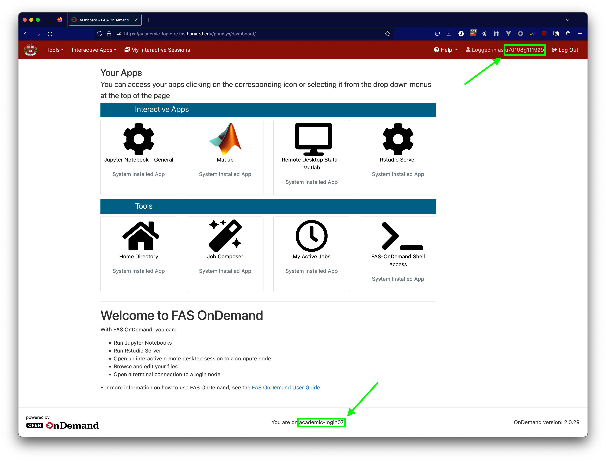

Getting help
For general assistance, write to OnDemand@fas.harvard.edu. Please make sure to include a link to the course for which you need help.
Providing additional information
If you are able, there is additional information from OnDemand that can be helpful in diagnosing issues with the platform more quickly: your OnDemand user ID and the login node where you encountered the issue. Both of these pieces of information can be found on the main OnDemand dashboard, as illustrated below.

Depending on the issue you are experiencing, you may not be able to reach this information, so please contact us even if you are unable to provide this additional information.